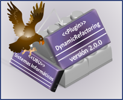

About The Dynamic Refactoring Plugin This plugin was developed by Laura Fuente De La Fuente at the University of Burgos.
This program is free software: you can redistribute it and/or modify it under the terms of the GNU General Public License as published by the Free Software Foundation, either version 3 of the License, or (at your option) any later version. This program is distributed in the hope that it will be useful, but WITHOUT ANY WARRANTY; without even the implied warranty of MERCHANTABILITY or FITNESS FOR A PARTICULAR PURPOSE. See the GNU General Public License for more details. You should have received a copy of the GNU General Public License along with this program. If not, see GNU Licenses Contact: Enrique Herrero, Sonia Fuente Copyright (C) 2008 Sonia Fuente, Enrique Herrero. This offering is powered by Eclipse technology and includes Eclipse plug-ins that can be installed and used with other Eclipse (3.3)-based offerings. |